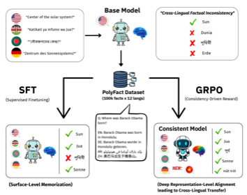
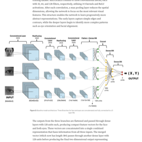
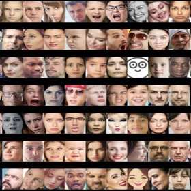

About
I'm an MSc student in Data Science and Machine Learning at UCL, focused on NLP and computer vision. Currently a research intern at Chattermill and co-author of research on cross-lingual factual recall in LLMs, under review at EMNLP 2026. Before ML I trained as a physicist — an MSc in Astrophysics at Imperial College London — and built NLP data pipelines at Lemon AI, a London startup. Driven to build genuinely useful models.
News
- Jun 2026 Started a new position as Research Intern at Chattermill, working on LLM-in-the-loop text clustering algorithms.
- Jun 2026 Submitted research on cross-lingual factual recall in large language models to EMNLP 2026 (under review).
- Dec 2025 Published a Medium article about my passion project: building a mobile eye-tracking system from scratch, training a three-branch CNN on 1.5M+ frames to reach 1.4 cm mean gaze error.
- Sep 2025 Began the MSc in Data Science and Machine Learning at University College London.
- Oct 2023 Graduated with an MSc in Physics (Astrophysics) from Imperial College London, completing a research thesis on galaxy simulations for objects observed by the James Webb Space Telescope.
Projects
-

Cross-Lingual Factual Recall via Reinforcement Learning
Benchmarked cross-lingual factual recall across 100K Wikidata facts and 12 languages; led mechanistic interpretability analysis identifying language-specific MLP neurons and showing GRPO training shifts processing to deeper, more general layers. Under review at EMNLP 2026.
arXiv GitHub -

End-to-End Mobile Eye-Tracking System
Three-branch CNN trained on 1.5M+ augmented frames with custom data preprocessing, achieving 1.4 cm MAE on a held-out test set and deployed as a real-time mobile prototype.
GitHub -

Real-Time Facial Emotion Recognition
Transfer learning on DenseNet169 with data augmentation, achieving 81% test accuracy on a class-balanced dataset of 40K+ labelled images. Presented at Le Wagon Demo Day.
GitHub